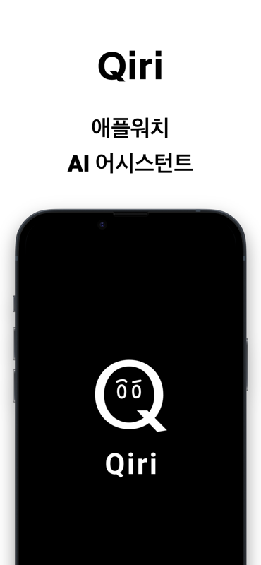
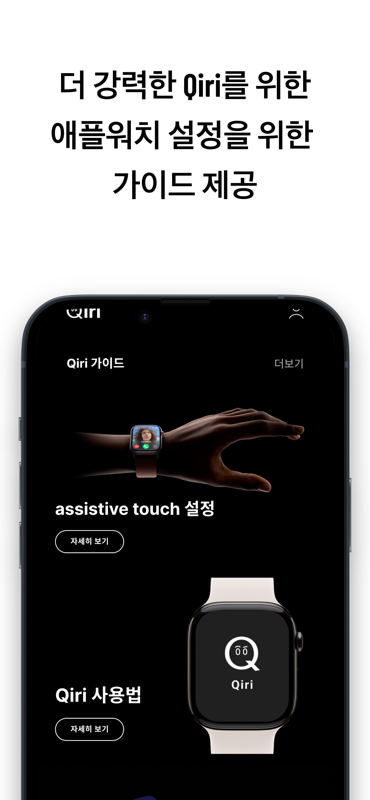
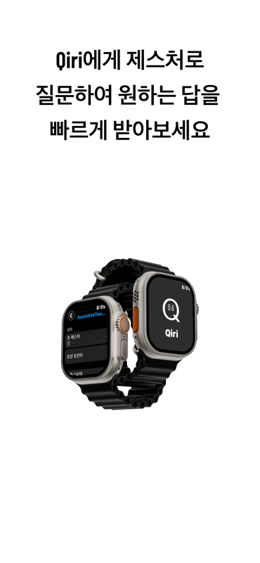
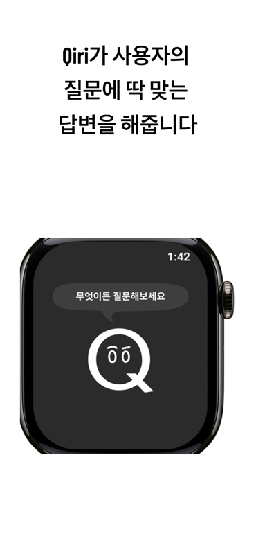

AssistiveTouch 기반 질문 흐름 접근성 개선
질문을 시작하고 답변을 확인하기까지 여러 번의 제스처가 필요해, 손을 쓰기 어려운 상황에서 오히려 사용 흐름이 복잡해지는 문제가 있었습니다.
화면마다 탐색 요소를 최소화하고 단축어와 AssistiveTouch를 연결해 앱 실행부터 음성 질문까지 바로 이어지도록 흐름을 다시 설계했습니다. 그 결과 제스처를 6회에서 3회로 줄여 약 50% 단축했습니다.
MY ROLE
TECH
iPhone과 Apple Watch의 사용 환경을 분리해 설계하고, WatchConnectivity와 URLSession Streaming으로 작은 화면에 맞는 실시간 AI 경험을 구현했습니다.
PROBLEM SOLVING
질문을 시작하고 답변을 확인하기까지 여러 번의 제스처가 필요해, 손을 쓰기 어려운 상황에서 오히려 사용 흐름이 복잡해지는 문제가 있었습니다.
화면마다 탐색 요소를 최소화하고 단축어와 AssistiveTouch를 연결해 앱 실행부터 음성 질문까지 바로 이어지도록 흐름을 다시 설계했습니다. 그 결과 제스처를 6회에서 3회로 줄여 약 50% 단축했습니다.
응답 속도를 높이기 위해 스트리밍 데이터를 가공 없이 출력하면서 미완성 문장과 마크다운 문법이 반복 노출되어, 작은 Watch 화면에서 답변을 읽기 어려웠습니다.
수신한 응답을 버퍼에 모으고 문장과 마크다운 구조가 완성된 시점에 UI를 갱신하도록 데이터 수신과 화면 표시 로직을 분리했습니다. 빠른 첫 응답은 유지하면서 텍스트 깨짐을 제거했습니다.
USER VALIDATION
2025년 ICT 박람회에서 Qiri를 실제 사용자에게 시연하고 사용성 피드백을 수집했습니다. 손 제스처 기반 질문 방식과 접근성 측면의 필요성을 중심으로 서비스 가치를 설명했습니다.
학생부터 개발자까지 다양한 방문객에게 독창적이고 실생활 활용성이 높다는 반응을 받았으며, 총 200명 이상이 체험하고 40건의 피드백을 수집했습니다.
체험 200+명 · 피드백 40건
(02) SCREENSHOTS



